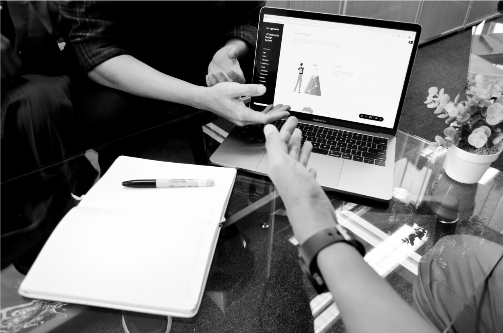

User Research
As a designer, you need to understand the wants and needs of your users. While conducting user research, I like to conduct interviews and surveys to get a better feel for who my user is, what they want/need, and what they dislike as well. This is where I capture their experiences so I can begin to narrow down who our user persona is, and better curate a product for them.
UI Elements
My favorite part of being a designer is implementing those visual aesthetics that are uniquely geared towards the product’s ideal user. I do think research on colors, shapes and any cultural elements can help appeal to users to not only provide a beautiful site, but correlate the message of the company visually in their products.
User Empathy
While I am interviewing during user research, I like to ask probing questions to get the interviewee to share a story that I can bettter understand what they took away. I usually only ask closed ended or leading questions if more quantitative statistics are needed, but still provide deeper insight for crafting our user persona.